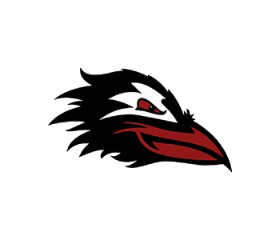
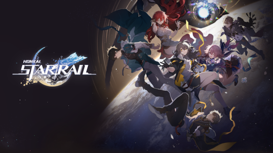

Basic Info and School Activites!

My school's mascot!
Hello everyone, my name is Binh Hoang, but you can just call me Angela . I was born on May 12, 2010, which makes me a Taurean.
Currently, I am a sophomore and I am taking AP Chemistry, AP World History, Weight Training, and AP Computer Science Principles.
I am also involved in some extra clubs like IYNA, YWAI, and iGEM in this school as well.
Overall, Canyon Crest Academy is a stressful place, but I have some things to do and work on while I am at school. The school I go to is
Canyon Crest Academy.
Interests and Hobbies!

Honkai Star Rail, a game I like to play!
When I am not at school, I like to watch video essays on stuff that interests me and listen to crime podcasts in my free time.
I also like playing video games as well in my free time and occasionally draw. My favorite food and drink are instant noodles and coffee , respectively.
Also, I am an introvert, so I would rather in my room and watch movies rather than go out to parties for relaxation. One game I like to play in my free time is
Honkai Star Rail.
Family and Culture!

The flag of my ethnicity!
Additionaly I have 2 parents and a little brother in my immediate family.
I am also Vietnamese, although I am pretty bad at speaking the language or sometimes even translating it.
However, whenever we go to Vietnam, I always enjoy it as the street food there is really good, especially the tofu skewers.
Addditionaly, my distant relatives are also really nice and usually like to shower me with a lot of gifts whenever I come to visit.
So although I am not completely connected to my culture, I would like to travel to Vietnam to be connected more to my home roots .
A good place to learn more about the history of Vietnam is this
Britannica page .